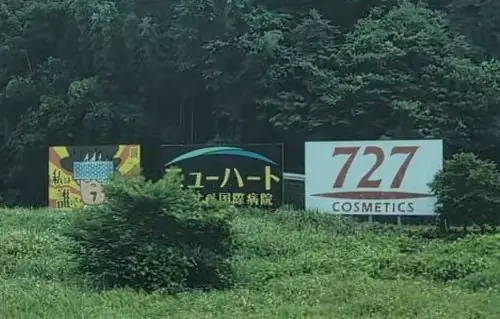
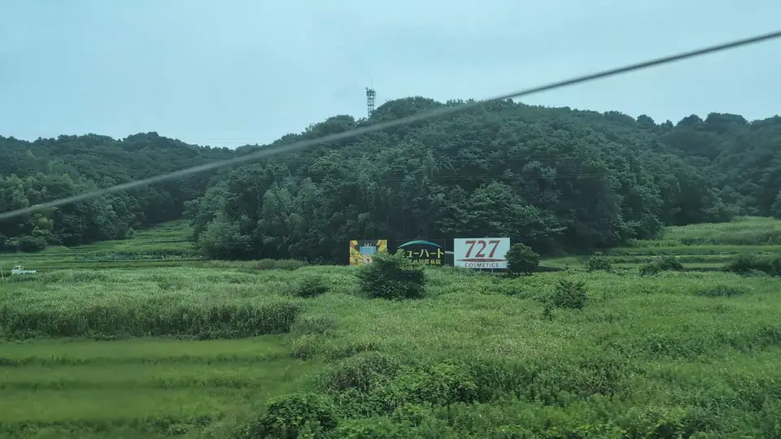
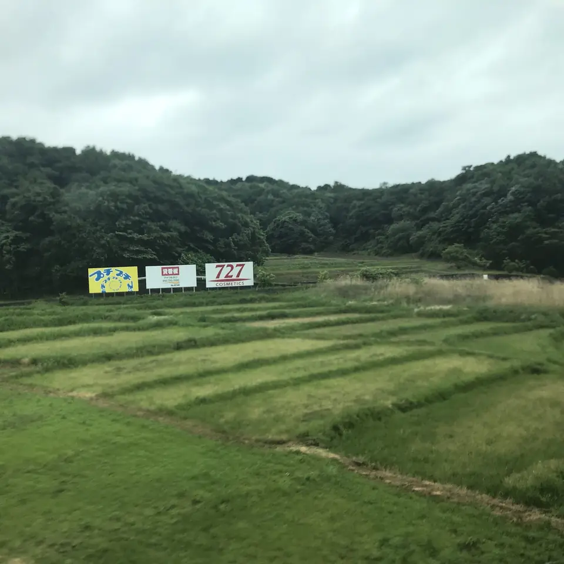

TOKAIDO SHINKANSEN WINDOW VIEW
When can you see Who am I? Sign from the Shinkansen?
Who am I?

- Section
- Shin-Yokohama → Odawara, around Fujisawa
- Seat side
- Seat A · sea side
- Timing
- About 29 minutes after leaving Tokyo on a Nozomi train
- Photos
- 3 photos
How to find Who am I? Sign
Between Shin-Yokohama and Odawara, a small mystery sign on the Seat A side asks, 'Who am I?' There is also a QR code in the upper-right corner, but reading it from a Shinkansen window is realistically difficult. This spot previously carried an ad from Kawakami Sangyo, the company known for PUTIPUTI bubble wrap, and the trackside sign changes from time to time. Beside it is the familiar 727 COSMETICS sign, so start watching with a little margin.
More: OCEANS: Story of PUTIPUTI (Japanese only)
If you are traveling from Tokyo toward Shin-Osaka, start watching the Seat A · sea side window as you approach Shin-Yokohama → Odawara, around Fujisawa. If you are traveling toward Tokyo, the order is reversed.
Location at a glance
Open mapSwitch between the spot and the Shinkansen viewpoint.
How to catch Who am I? Sign
1. Choose the window first
As you approach Shin-Yokohama → Odawara, around Fujisawa, start watching from Seat A · sea side. Use Live Guide while riding, or the map on this page before you board.
The clearest view lasts only one or two seconds. Let Live Guide warn you before you look up.
2. Highlights
This is not a headline landmark like Mt. Fuji or a major castle. It is the kind of small window view that feels rewarding precisely because you know where to look.
Who am I? Sign in photos

